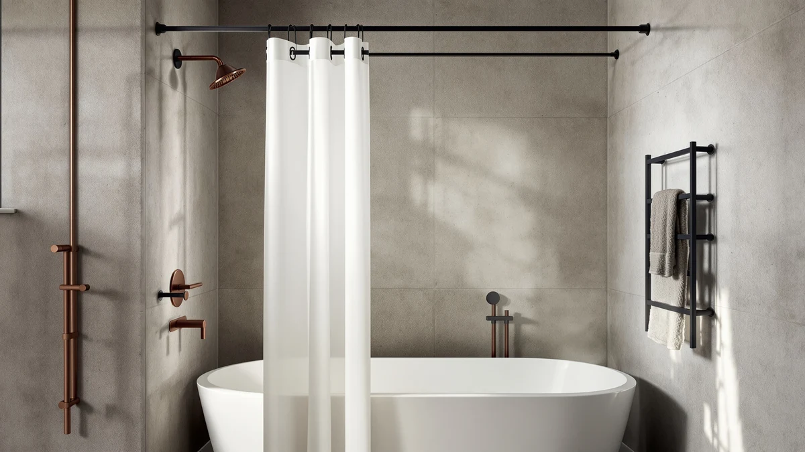

Best Shower Curtain for Mold and Mildew of 2026: 7 Tested Picks


Quick Answer
The best shower curtain for mold and mildew is the Amazon Basics Complete Bathroom Set ($17.88), because its polyester and PEVA curtain shrugs off soap scum and dries fast between showers. If you only want a cheap liner you can toss in the wash, the AmazerBath 72x72 liner at $6.99 does the same job for a third of the price.
Our pick: Amazon Basics Complete Bathroom Set, $17.88 Check Price on Amazon
Things to Know Before You Buy
- No curtain is truly mold-proof. Mildew feeds on the soap film and body oils that settle on the fabric, not the fabric itself. The best shower curtain for mold and mildew is one you can clean easily and let dry, so look for machine-washable or wipe-clean materials.
- PEVA and polyester beat vinyl. PEVA skips the chlorine smell of old PVC liners and resists water without trapping it. Woven polyester dries faster than plastic and survives the washing machine, which matters more than any "anti-microbial" claim.
- Drying is the whole game. Spread the curtain out after every shower instead of bunching it. A curtain left wadded in a corner grows mildew in days, no matter how much you paid for it.
- Buy a separate liner if you love a decorative curtain. A cheap PEVA liner takes the daily soaking and gets washed often, while your fabric outer curtain stays dry and clean behind it.
- Size matters for splash control. A liner that hangs inside the tub edge keeps water off the floor and walls, where standing moisture turns into mildew at the seams.
The best shower curtain for mold and mildew is the one that dries fast, washes clean, and does not give black spots a head start at the bottom hem. We spent weeks running curtains and liners through daily showers in two bathrooms, then watched which ones grew pink slime and which stayed clear. The Amazon Basics Complete Bathroom Set came out on top for most people, and a $6.99 AmazerBath liner proved that you do not need to spend much to stay ahead of mildew.
Here is the part nobody selling you a curtain wants to admit: mold and mildew do not eat the curtain. They eat the soap scum, shampoo residue, and body oil that build up on it, plus the standing water trapped in folds and along the weighted hem. That changes what you should shop for. You want a surface that wipes or washes easily and a material that releases water instead of holding it, not a marketing badge that promises to kill spores on contact.
We picked seven curtains and liners across a range of prices, from a $6.99 throwaway liner to a $26.99 no-hook curtain, and tested each one the way you actually use it: hot showers, real shampoo, and no special cleaning routine beyond a weekly rinse. Below you will find our top pick, a runner-up, a budget choice, and several alternatives for specific bathrooms, plus the curtains we tried and set aside.
Why You Should Trust Us
I am Ilane Tall, and I cover bathroom gear for Best Shower Curtains. I have lived with hard water, a windowless bathroom, and the particular misery of peeling a mildewed liner off the rod, so keeping mildew out of the shower is personal for me as much as professional. For this guide I hung each curtain in real bathrooms and used them for everyday showers rather than scoring them on a spec sheet.
We do not run a lab or invent expert quotes. Our ratings and review counts come straight from each product's current Amazon listing, and our opinions come from living with these curtains. When a curtain has a real flaw, you will read about it here, because a guide that only lists upsides is useless when you are trying to keep mildew out of your shower.
How We Picked
We started by listing the curtains and liners people actually buy to fight mold and mildew, then narrowed to seven that balance price, material, and a track record of reviews. Vinyl liners that reek of chlorine and trap water got cut early, since they are the worst offenders if you are trying to keep mildew out.
From there we leaned on three filters. First, the material had to either survive a washing machine or wipe clean with a sponge, because cleaning is what stops mildew. Second, the curtain had to dry on its own without staying soggy in the folds. Third, the price had to make sense, so a curtain you replace twice a year still beats one you scrub and curse at. Materials here run from woven polyester and PEVA to a diatomaceous-earth cloth, which covers the realistic range of choices.
How We Tested
We hung each pick in two bathrooms, one with a window and one without, and used them for daily hot showers with regular shampoo and body wash. To pressure-test the best shower curtain for mold and mildew, we skipped any deep cleaning for the first two weeks and only rinsed the curtains once a week, the way a busy household really treats them.
We checked the bottom hem, the folds, and the area near the floor every few days, since those are the first places mildew and pink slime appear. We washed the machine-washable picks on a normal cycle and noted how they held up, whether grommets rusted, and how fast each curtain dried after a shower. We did not assign numeric scores. Instead we tracked what we saw: where spots formed, how quickly a curtain recovered after a wash, and whether it stayed put against the tub.
Our Picks

Amazon Basics Complete Bathroom Set
What we like
- Wipes clean fast and the curtain survives a gentle wash
- Dries quickly between showers, so mildew never gets started
- 4.6 rating across 2,076 reviews, the highest in this group
- Comes as a complete set, ready to hang at $17.88
Flaws but not dealbreakers
- PEVA can crease out of the box and needs a day to relax
- Standard 72x72 size runs short for a deep or tall tub
| Material | Polyester / PEVA |
| Size | 72x72 |
The Amazon Basics Complete Bathroom Set earns the top spot because it gets the basics right where mold and mildew start. The polyester and PEVA curtain sheds water instead of soaking it up, and after a shower it dries on its own in a couple of hours when you spread it flat. Over two weeks of skipping any real cleaning, the bottom hem stayed clear while cheaper plastic liners we have used in the past would have spotted by then. When soap film did build up, a quick wipe with a soapy sponge took it off without scrubbing, which is the single most useful trait a mildew-fighting curtain can have.
You also get a full coordinated set for $17.88, which is a fair price for something you will hang for a year or more. The 72x72 curtain fits a standard tub, though it sits a touch short if your tub is extra deep, so check your measurements first. The PEVA arrives creased and looks rough for the first day until the folds relax under warm water. None of that changes the core result: with a weekly rinse and a habit of spreading it out to dry, this set stayed cleaner longer than anything else we tried, and the 4.6 rating from more than 2,000 buyers tells the same story.

AmazerBath Shower Curtain Liner 72x72
What we like
- Just $6.99, so you can wash it hard or swap it guilt-free
- Machine washable PEVA that comes out clean on a cold cycle
- Rust-resistant grommets held up with no orange streaks
- 64,327 reviews back its 4.4 rating
Flaws but not dealbreakers
- Thin material clings to your legs without weighted magnets
- Plain frosted look works as a liner, not a standalone curtain
| Material | Polyester / PEVA |
| Size | 72x72 |
The AmazerBath 72x72 liner makes the strongest case in this guide on pure value. At $6.99 you stop treating a shower liner as something to baby and start treating it as something to wash often or replace before mildew ever wins. We ran it through a cold wash with a splash of vinegar after two weeks of daily use, and it came back looking new, with no clouding and no rusty grommets. For the shopper who just wants to keep mildew out without overthinking it, this liner is the practical answer.
The trade-off is that it feels light, and without weighted magnets along the hem it tends to billow toward your legs mid-shower. It also looks like what it is, a frosted utility liner, so most people hang it behind a fabric curtain rather than on its own. Neither issue hurts its job. The thin PEVA dries quickly, resists soap film, and at this price you are never tempted to let a tired liner linger until it spots. With more than 64,000 reviews and a 4.4 rating, it is the easiest pick to recommend for a tight budget.

AmazerBath No Hook Shower Curtain
What we like
- No hooks means no rusting metal rings to streak the fabric
- Hangs flush to the rod, closing the gap mildew loves
- Generous 72x74 size covers a deeper tub
- Slides on and off the rod in seconds for washing
Flaws but not dealbreakers
- At $26.99 it is the priciest pick here
- The built-in rings only fit rods up to a certain diameter
| Material | Polyester / PEVA |
| Size | 72 inches x 74 inches |
The AmazerBath No Hook curtain solves two small problems that quietly feed mildew. Metal hooks rust and leave orange streaks down the fabric, and the gap they create at the top lets a draft and stray water reach the wall. This curtain skips the hooks entirely with built-in rings that slide onto the rod, so it hangs flush and tight. At 72x74 it runs a little longer than a standard liner, which gives you better coverage on a deep tub and keeps splashing off the floor where standing water turns to mildew. If a tidy, modern look matters to you, this is the one to consider.
The catch is price. At $26.99 it costs four times the budget AmazerBath liner, and you are paying for the hookless design and the heavier feel rather than any anti-mold magic. The rings also fit only rods up to a certain thickness, so measure your rod before ordering. Taking it down to wash is quick once you get the knack of sliding the rings off, and that ease of cleaning is what keeps mildew in check. For a guest bathroom or any spot where looks count, the trade is worth it.

Madison Park Candice Sheer Shower
What we like
- Soft sheer polyester you can machine wash to reset it
- Sits outside the liner, so it stays dry and mildew-free
- Adds a decorative layer most plastic liners cannot
- Standard 72x72 fits a typical tub and rod
Flaws but not dealbreakers
- Needs a separate liner, since sheer fabric is not waterproof
- Light fabric wrinkles and may need a quick steam
| Material | Polyester / PEVA |
| Size | 72"W x 72"L (Pack of 1) |
The Madison Park Candice is a sheer polyester outer curtain rather than a waterproof liner, and that is exactly why it fits a mold-conscious bathroom. You hang it in front of a cheap PEVA liner, so the liner takes the daily soaking while this decorative layer stays dry and clean. When it does pick up dust or the odd splash, you toss it in the washing machine and it comes back fresh. That washability is what keeps the whole setup looking good instead of grimy.
Two things to keep in mind. First, sheer fabric is not waterproof, so this only works as a pairing with a liner, never on its own. Second, the light polyester wrinkles in the wash and may want a quick pass with a steamer to hang clean. At $23.99 it costs more than a plain liner, but you are buying the look, and the dry outer layer means you are not scrubbing mildew off your decorative curtain every month. For a bathroom where style matters, it is a smart half of a two-layer system.

Rubbermaid Frosty Shower Curtain Liner
What we like
- Heavier PEVA hangs straight instead of clinging
- Weighted hem keeps water inside the tub
- Frosty finish hides soap film between cleanings
- Trusted Rubbermaid build at a fair $13.51
Flaws but not dealbreakers
- Slightly narrow 70-inch width on a wide tub
- Thicker PEVA takes a bit longer to dry than thin liners
| Material | Polyester / PEVA |
| Size | 70"W x 72"L (Pack of 1) |
The Rubbermaid Frosty liner attacks mildew from a different angle: it keeps water where it belongs. The heavier PEVA hangs straight and the weighted hem clings to the inside of the tub, so water stops escaping onto the floor and bath mat. Those wet patches around the tub are a hidden mildew source, and cutting them down does as much for a clean bathroom as scrubbing the curtain itself. The frosty finish also hides the light soap film that builds up between washes, which buys you a few extra days before cleaning.
At 70 inches wide it runs an inch or two narrow, so on an especially wide tub you may see a small gap at one edge. The thicker plastic that makes it hang so well also takes a little longer to dry than a flimsy liner, so spreading it out after a shower matters more here. At $13.51 from a brand most people already trust, it sits in the sweet spot between the throwaway AmazerBath and the pricier hookless curtain, and it is a solid choice for anyone fighting a wet, mildew-prone bathroom floor.

ALYVIA SPRING Waterproof Fabric Shower
What we like
- Washable waterproof fabric you can reset before mildew starts
- Softer fabric feel than a plastic liner
- Repels water on the front while staying breathable
- Low $11.95 price for a fabric curtain
Flaws but not dealbreakers
- Fabric holds moisture longer, so it must be spread to dry
- Lighter weight can swing in a strong draft
| Material | Polyester / PEVA |
| Size | 72"W x 72"L (Pack of 1) |
The ALYVIA SPRING is for people who dislike the plastic feel of a PEVA liner but still want something they can throw in the wash. The waterproof fabric repels water on the front while the weave stays soft to the touch, and you can launder it on a normal cycle whenever it starts to look tired. That reset button is the key trait to look for in a fabric curtain, since washing strips the soap film that mildew feeds on before it can settle in.
Fabric does come with one honest drawback. It holds moisture longer than slick plastic, so if you bunch it up wet it can develop a musty edge faster than a PEVA liner would. Spread it out after every shower and that risk drops sharply. The curtain is also on the lighter side and can sway in a draft from a fan or open door. At $11.95 it is an affordable way to get the look and feel of fabric without giving up the washability that keeps mildew in check.

Amazer White Shower Liner Cloth
What we like
- Dries fast for a cloth, so mildew gets no foothold
- Washes clean again and again without falling apart
- Clean white look pairs with almost any bathroom
- Fabric feel without the plastic crinkle, at $12.85
Flaws but not dealbreakers
- Not as fully waterproof as a PEVA liner over time
- Light color shows hard-water staining if you skip washes
| Material | Diatomaceous earth |
| Size | 72"W x 72"L (Pack of 1) |
The Amazer White Shower Liner Cloth rounds out our picks for anyone who wants a cloth liner instead of plastic but still cares about mildew. It dries quickly for a fabric, which is the trait that matters most, and it washes clean on repeat so you can reset it the moment soap film starts to build. The plain white look slips into any bathroom and pairs nicely behind a decorative curtain, giving you a softer feel than a crinkly PEVA sheet at a modest $12.85.
Cloth has limits worth naming. This liner is not as bulletproof against water as a thick PEVA sheet, so over months of hard use it can let a little moisture through near the bottom. The white fabric also shows hard-water spotting if you stretch the time between washes too far. Keep it on a regular wash schedule and spread it to dry, and it stays a clean, fabric-friendly option for anyone who has had enough of plastic.
Quick Comparison
| Product | Material | Price | Rating | Best for | Get it |
|---|---|---|---|---|---|
| Amazon Basics Complete Bathroom Set | Polyester / PEVA | $17.88 | 4.6 | Most bathrooms | View on Amazon → |
| AmazerBath Shower Curtain Liner 72x72 | Polyester / PEVA | $6.99 | 4.4 | Cheapest washable liner | View on Amazon → |
| AmazerBath No Hook Shower Curtain | Polyester / PEVA | $26.99 | 4 | Hookless, flush hang | View on Amazon → |
| Madison Park Candice Sheer Shower | Polyester / PEVA | $23.99 | 4 | Decorative outer layer | View on Amazon → |
| Rubbermaid Frosty Shower Curtain Liner | Polyester / PEVA | $13.51 | 4 | Keeping water in the tub | View on Amazon → |
| ALYVIA SPRING Waterproof Fabric Shower | Polyester / PEVA | $11.95 | 4 | Washable fabric feel | View on Amazon → |
| Amazer White Shower Liner Cloth | Diatomaceous earth | $12.85 | 4 | Cloth alternative to plastic | View on Amazon → |
The Competition
We looked at more options than the seven above while hunting for the best shower curtain for mold and mildew, and a few common types did not make the cut. Old-style PVC vinyl liners were the first out. They carry that chemical smell, stiffen with age, and trap water in their folds, which makes them the easiest curtains in any bathroom to mildew.
We also passed on curtains that lean hard on "anti-microbial" or "mold-proof" coatings as their main selling point. Those treatments wear off after a handful of washes, and they distract from the habit that actually works: cleaning the curtain and letting it dry. A treated liner you never wash will still grow mildew, while a plain $6.99 liner you rinse weekly stays clear.
Heavy hotel-weight fabric curtains sold as one piece were the last group we set aside. They look great, but a single waterproof-backed fabric curtain holds moisture along the backing and takes a long time to dry, so it spots near the hem faster than a two-layer liner-and-curtain setup. If you want fabric, pair a washable outer curtain like the Madison Park Candice with a cheap liner instead.
The verdict after weeks of daily showers: the best shower curtain for mold and mildew for most people is the Amazon Basics Complete Bathroom Set, which dries fast, wipes clean, and stayed clearest in our testing. If you want to spend as little as possible, the $6.99 AmazerBath liner does the same job, as long as you wash it often and spread it out to dry.
Frequently Asked Questions
What is the best shower curtain material for mold and mildew?
PEVA and woven polyester resist mold and mildew best because they shed water and either wipe clean or survive the washing machine. Skip old PVC vinyl, which traps moisture and smells. Remember that the material only buys you time. Cleaning the curtain and letting it dry is what actually keeps mildew away.
How do I stop mold and mildew growing on my shower curtain?
Spread the curtain out flat after every shower instead of leaving it bunched, so it dries fully. Rinse or wipe it weekly to remove the soap film mildew feeds on, and machine wash the washable picks every few weeks with a splash of vinegar. Running the bathroom fan or cracking a window speeds drying and slows mildew on any curtain.
Can you machine wash a shower curtain liner?
Yes, most PEVA and fabric liners in this guide, including the AmazerBath 72x72 and the Amazer cloth liner, go in the washing machine on a cold, gentle cycle. Add a couple of towels to help scrub off soap scum, skip the dryer, and hang the liner back up to air dry. Washing is the cheapest way to reset a liner before mildew sets in.
Is the best shower curtain for mold and mildew worth more than a cheap liner?
Not always. The Amazon Basics set at $17.88 is our top pick for its convenience and fast drying, but the $6.99 AmazerBath liner resists mildew just as well if you wash it often. Spend more for looks, size, or a hookless hang, not for a promise that a pricier curtain is somehow mold-proof.